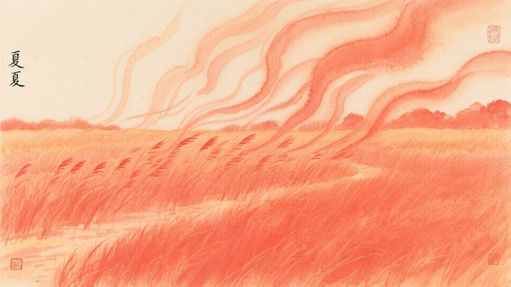
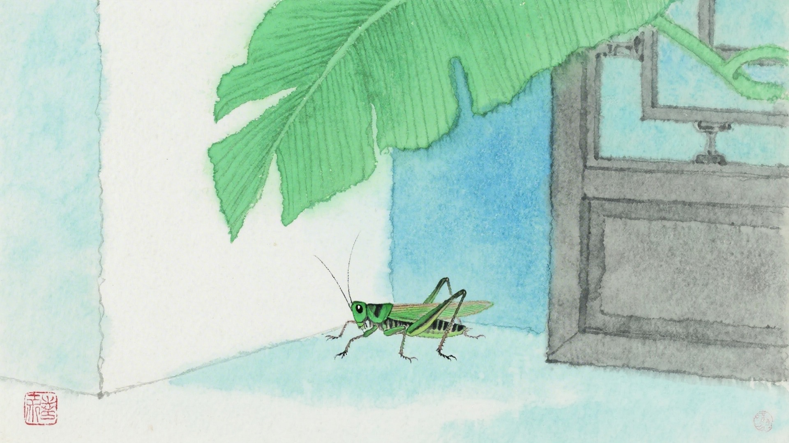
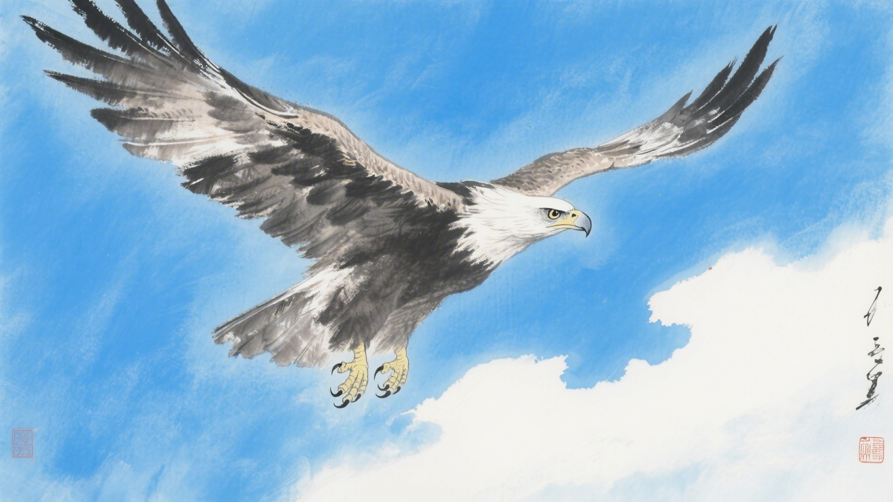
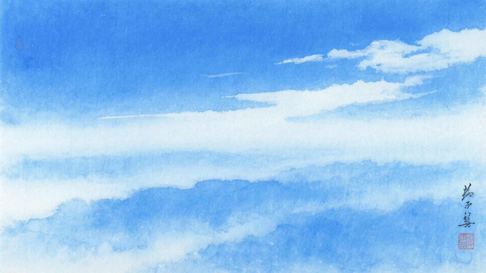
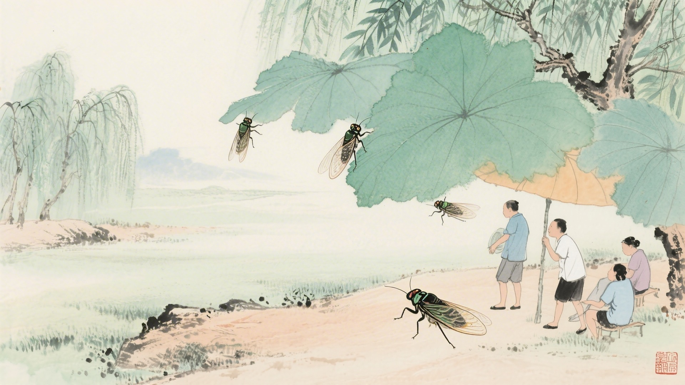

《中国传统色：故宫里的色彩美学》一书中为什么把下面这些颜色归入小暑节气？
骍刚、赪霞、赪尾、朱柿
天球、行香子、王刍、荩箧
赤灵、丹秫、木兰、麒麟竭
柔蓝、碧城、蓝采和、帝释青
小暑到了，热风扑面而来。蟋蟀躲在墙角，老鹰飞上高空，萤火虫开始闪烁。古人说小暑有三候：温风至，蟋蟀居宇，鹰始鸷。这十六种颜色，便从这三候里来。
小暑的"暑"，是炎热的意思。热风吹来，连蟋蟀都受不了，躲到屋里乘凉。颜色也热得发烫，红的更红，蓝的更蓝，像是被太阳烤化了，要流出来。
对应：小暑节气一候"温风至"的起、承、转、合四色。
色彩意象：热风吹来，万物蒸腾。
从橙红到深红，是热风吹过田野的色彩变化，也是小暑时节最炙热的颜色。

对应：小暑节气二候"蟋蟀居宇"的起、承、转、合四色。
色彩意象：蟋蟀躲进屋檐，寻觅阴凉。
从青白到青绿，是蟋蟀躲避酷暑的色彩变化，也是小暑时节最清凉的角落。

对应：小暑节气三候"鹰始鸷"的起、承、转、合四色（其一）。
色彩意象：老鹰搏击长空，气势凌厉。
从紫红到深红，是老鹰在烈日下翱翔的色彩变化，也是小暑时节最凌厉的气势。

对应：小暑节气三候"鹰始鸷"的起、承、转、合四色（其二）。
色彩意象：高空的蓝天，清澈辽远。
从浅蓝到深蓝，是高空的色彩变化，也是小暑时节最辽阔的天空。

小暑的太阳，像是跟人过不去。早上出来，一直晒到晚上，连云彩都躲起来了。颜色也跟着受罪，晒得发烫，晒得发亮，晒得像是着了火。

颜色也懂得避暑。红的躲在树荫下，蓝的躲在天上，黄的呢，躲在草丛里。它们知道，再热也要撑着，因为大暑还在后面等着。
（以上解读不代表原书观点）